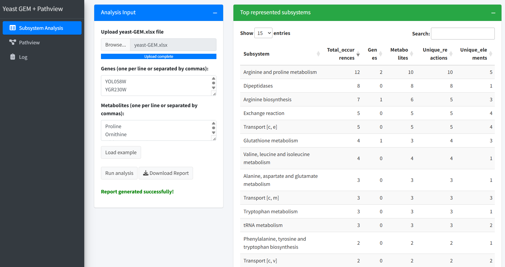

Interactive tool for subsystem analysis and KEGG pathway visualization in Saccharomyces cerevisiae.

Identify genes and metabolites involved in yeast metabolic subsystems.
Visualize gene and metabolite changes directly on KEGG pathway maps.
Download reports and pathway images for your analyses.
Load example values to try the app with ready-to-use inputs.
Upload your yeast-GEM.xlsx file.
Click “Load example” to use example genes and metabolites.
Run the subsystem analysis to identify matches.
Select a KEGG pathway and visualize your data on the map.
Download the report and pathway image (PNG).
Developed by Luca De Martino (PhD student)
IBIOM – CNR
Institute of Biomembranes, Bioenergetics and Molecular Biotechnologies
National Research Council of Italy